Actual app / native-05-place-runtime-v3 Acquired journeys and explicit mature diagnostics are separately reported. Visual, child observation, natural 7-day growth and real-device gates are not inferred.
acquired-390-welcome.png 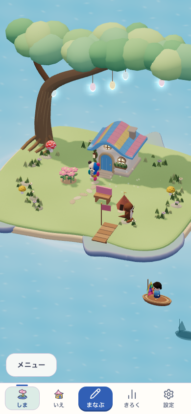
acquired-390-first-home.png 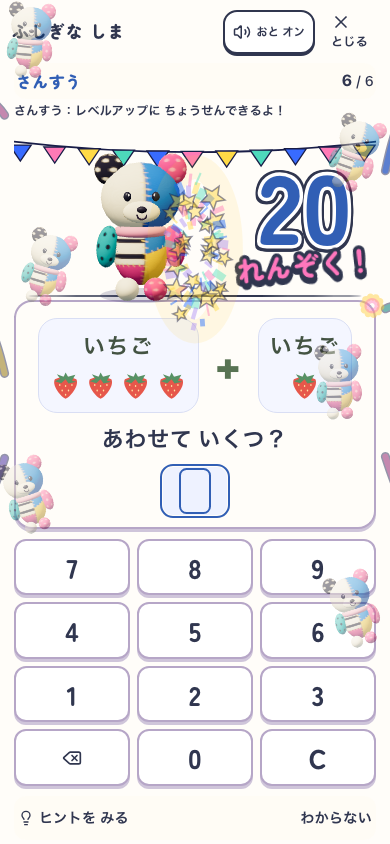
acquired-390-twenty-real-answers.png 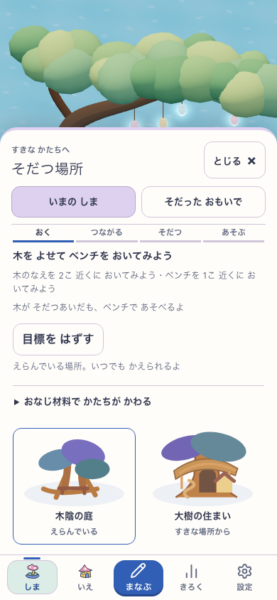
acquired-390-optional-six-goals.png 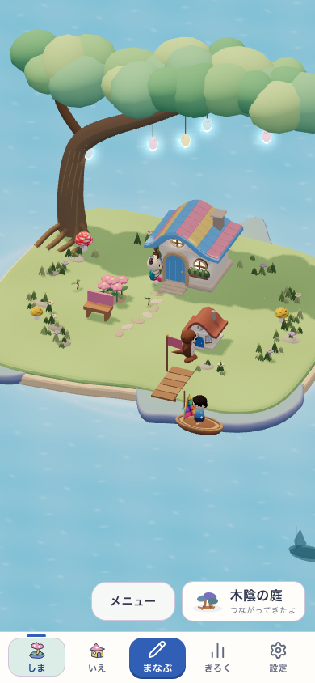
acquired-390-young-connected-garden.png 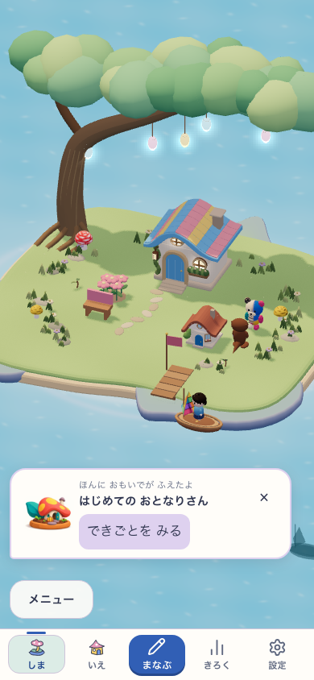
acquired-390-split-same-owner.png 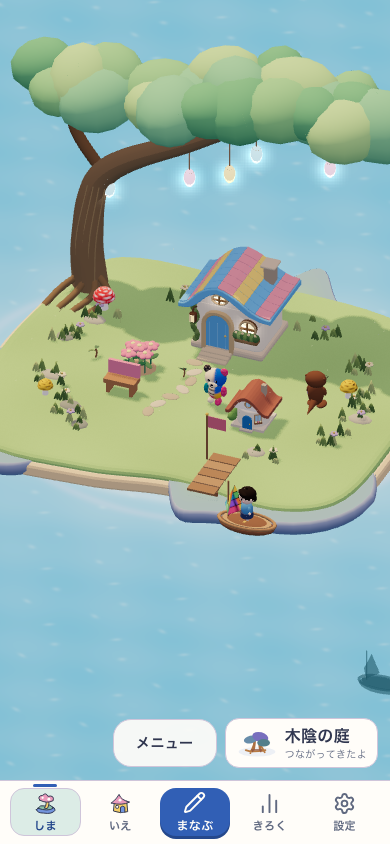
acquired-390-reconnected-same-tree.png 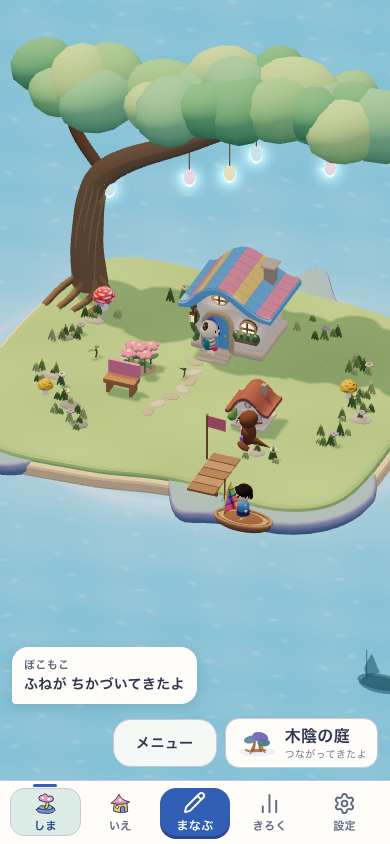
acquired-390-same-plan-return.png acquired-768-welcome.png 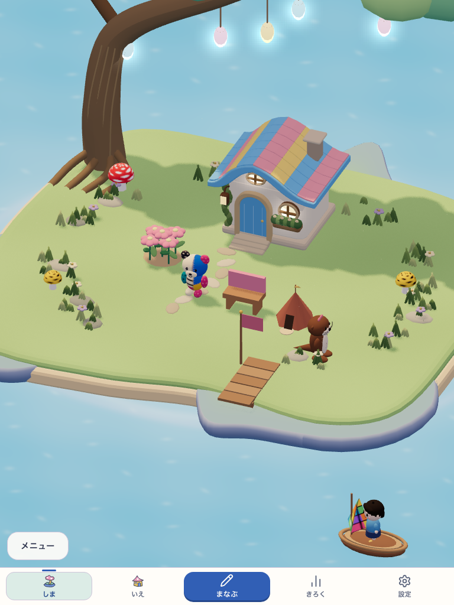
acquired-768-first-home.png 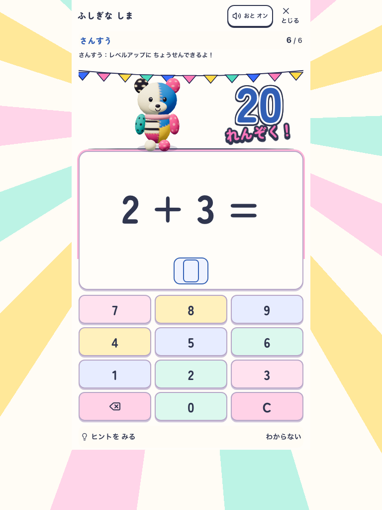
acquired-768-twenty-real-answers.png 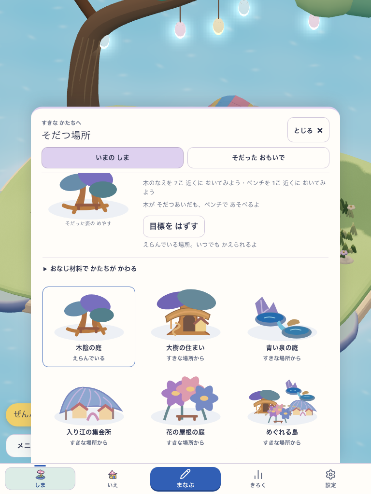
acquired-768-optional-six-goals.png 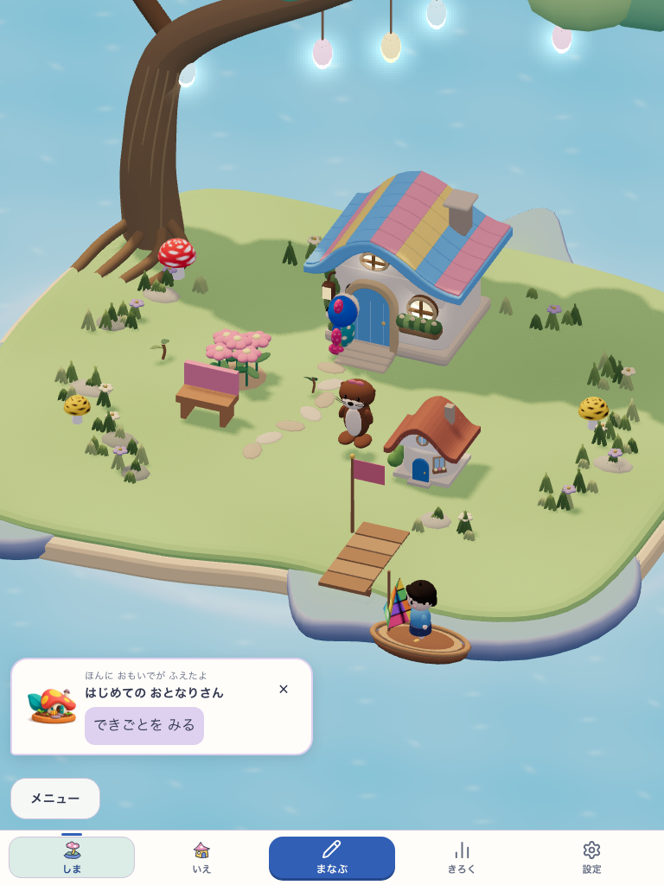
acquired-768-young-connected-garden.png 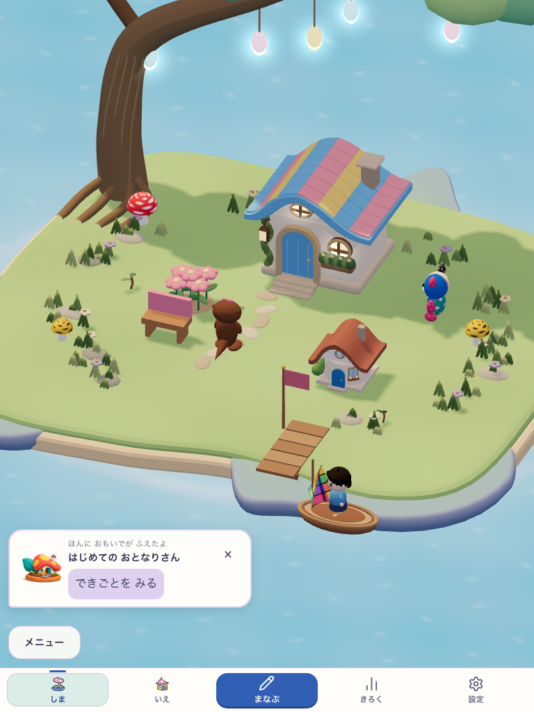
acquired-768-split-same-owner.png 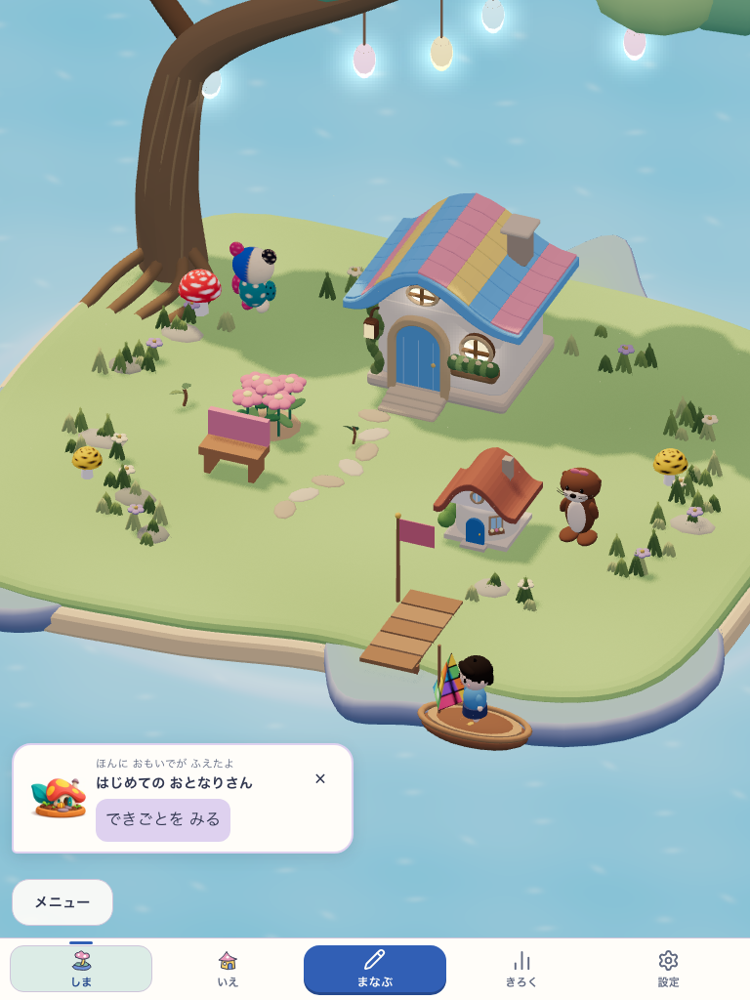
acquired-768-reconnected-same-tree.png 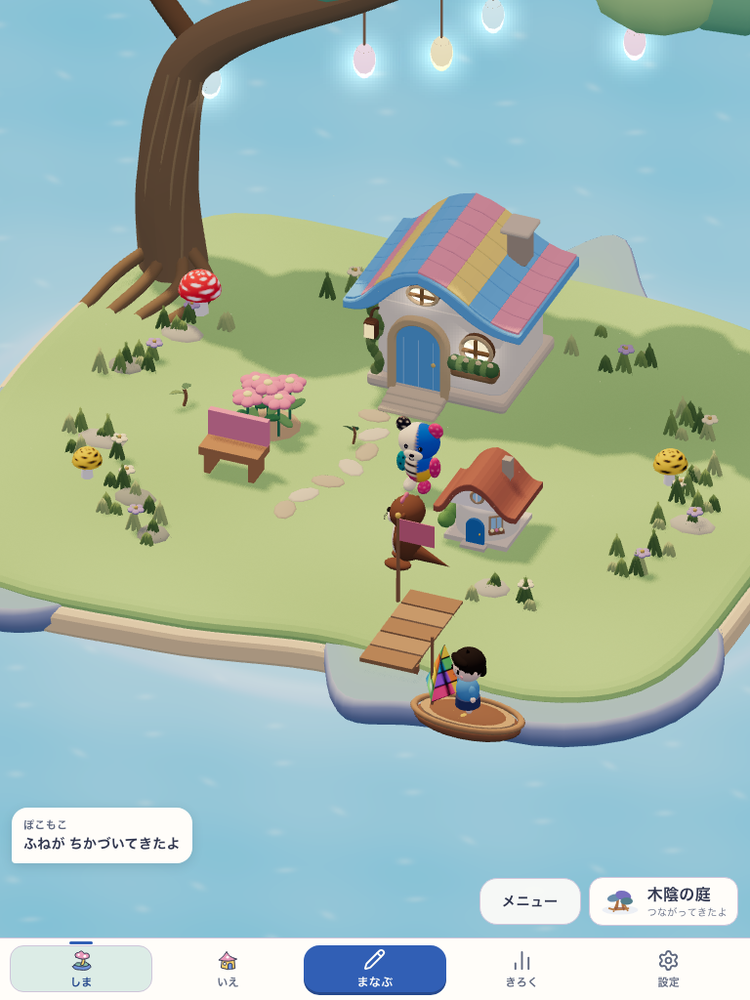
acquired-768-same-plan-return.png acquired-320-welcome.png 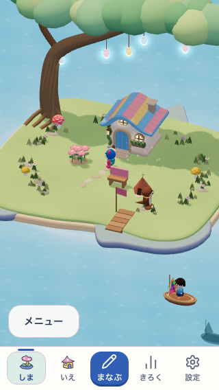
acquired-320-first-home.png 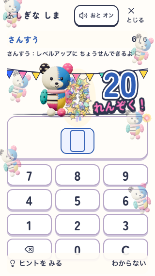
acquired-320-twenty-real-answers.png 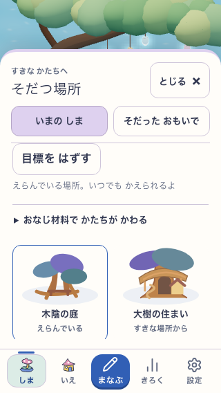
acquired-320-optional-six-goals.png 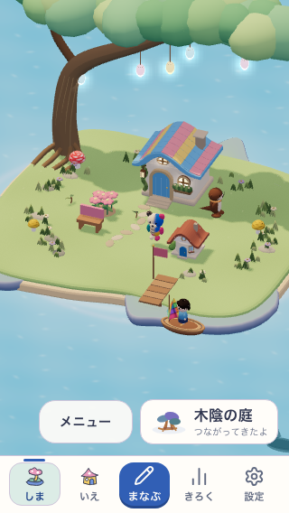
acquired-320-young-connected-garden.png 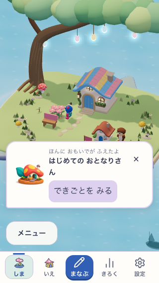
acquired-320-split-same-owner.png 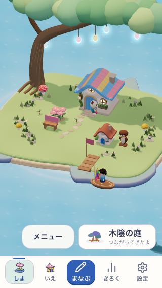
acquired-320-reconnected-same-tree.png 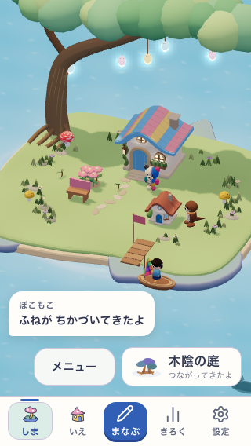
acquired-320-same-plan-return.png 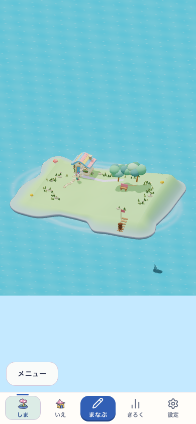
qa-place-p01-lane-v1-390-grown-real-3d.png 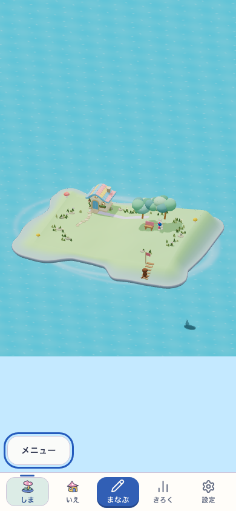
qa-place-p01-lane-v1-390-first-failure.png